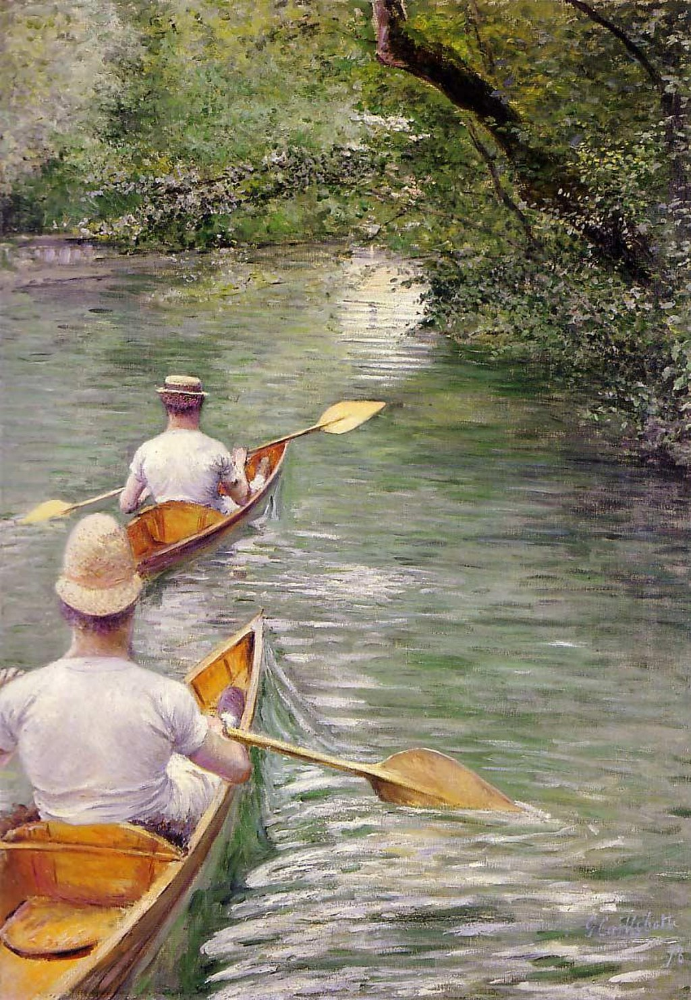

<head>
<meta charset="UTF-8" />
<meta name="keywords" content="drawing, painting" />
<meta name="description" content="drawings by Sunjy" />
<title>Sunjy</title>
<link rel="shortcut icon" type="image/x-icon" href="../../mImages/mCommon/favicon.ico" media="screen" />
<link rel="stylesheet" type="text/css" href="../../mCsses/mCommon/mCssA.css" />
<link rel="stylesheet" type="text/css" href="../../mCsses/mCommon/mCssB.css" />
<link rel="stylesheet" type="text/css" href="../../mCsses/mCommon/mCssC.css" />
<link rel="stylesheet" type="text/css" href="../../mCsses/mCommon/mCssD.css" />
<link rel="stylesheet" type="text/css" href="../../mCsses/mContent/mCssA.css" />
<link rel="stylesheet" type="text/css" href="../../mCsses/mContent/mCssB.css" />
<link rel="stylesheet" type="text/css" href="../../mCsses/mContent/mCssC.css" />
<link rel="stylesheet" type="text/css" href="../../mCsses/mContent/mCssD.css" />
</head>
<script type="text/javascript" src="../../mScripts/mContent/mContentAA.js" /></script>
<script type="text/javascript" src="../../mScripts/mContent/mContentAB.js" /></script>
<script type="text/javascript" src="../../mScripts/mContent/mContentAC.js" /></script>
<script type="text/javascript" src="../../mScripts/mContent/mContentAD.js" /></script>
<script type="text/javascript"></script> 
<script type="text/javascript">
document.write('<div class="mImgAbsolute"></div>');
/*
document.write('<p class="mFontSizeBColor" />From a white paper...</p>');
document.write('<table class="center"><tr><td>');
document.write('');
document.write('</td></tr></table>');
*/
</script>


<script type="text/javascript">
document.write('<p class="mFontSizeBColor" />Les Périssoires</p>');
document.write('<p class="mFontSizeSColor" />Les Périssoires by Gustave Caillebotte, depicts the pleasures of summer during the artist’s summer holidays on his family’s property on the banks of the Yerres.<br><br>The movement of the paddles rebalancing from one rower to another as the water split by the bow of the boats. Caillebotte was influenced by photographic art practiced by his brother, Martial.<br><br>The framing of the scene is cropped as Caillebotte experimented with the conventions of painting.  Gustave Caillebotte’s perspective was a precursor that makes him influential in the history of modern art.<br></p>');
document.write('<table class="center" /><tr><td>');
document.write('<br>The movement of the paddles rebalancing from one rower to another as the water split by the bow of the boats. Caillebotte was influenced by photographic art practiced by his brother, Martial.<br><br>The framing of the scene is cropped as Caillebotte experimented with the conventions of painting.  Gustave Caillebotte’s perspective was a precursor that makes him influential in the history of modern art.<br>" />');
document.write('</td></tr></table>');
</script>


